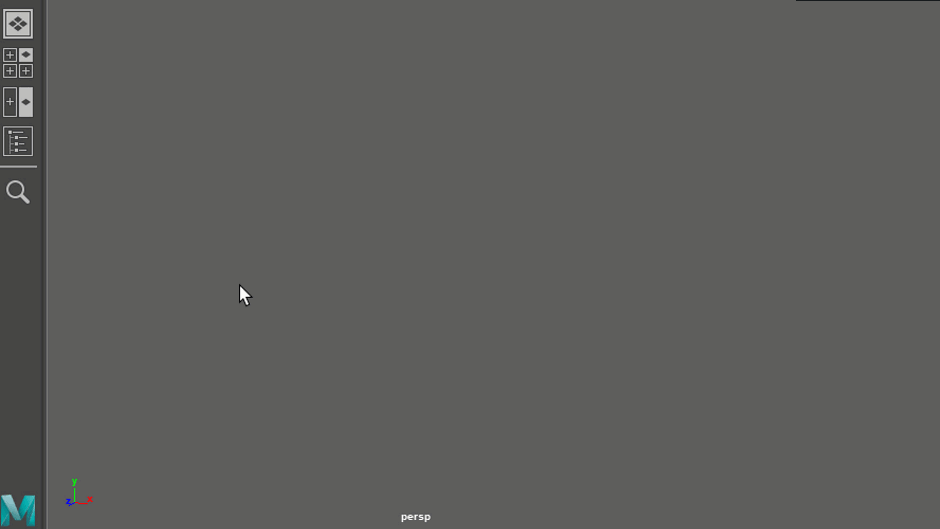

使用摄影机、视图面板、显示/隐藏选项、漫游等功能浏览场景。
使用 Viewcube 绕对象旋转
在三维空间中寻找方法可能比较棘手。视口角落中有一个 Viewcube，可用于在空间中到处移动。
单击应用程序主页  左侧“快速入门”(Getting Started)选项卡中的“开始交互式教程”(Start Interactive Tutorials)按钮，然后查看“基础知识”(Basics)教程，以获取一种有趣的方法来开始。
左侧“快速入门”(Getting Started)选项卡中的“开始交互式教程”(Start Interactive Tutorials)按钮，然后查看“基础知识”(Basics)教程，以获取一种有趣的方法来开始。
YouTube 上的 Maya 教学频道提供了一些可提供帮助的简短视频。
以下视频展示了如何通过不同方法设置视图面板的信息，其中包括使用默认摄影机和自定义视图面板的外观。
如果要查找特定工具、菜单或命令，请尝试在视口中按 Ctrl + F 以打开“搜索字段”(Search Field)。

操作中的“搜索”字段
界面概述主题包含 Maya 界面的带标签图表，以便您可以查看工具的位置及其名称。